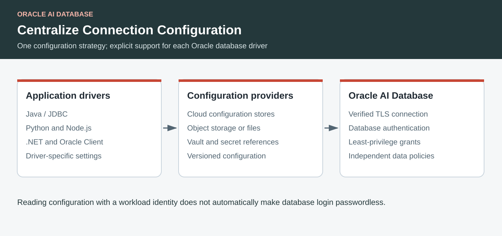

Oracle AI Database · Drivers · Configuration · Identity
Oracle AI Database Configuration Providers Across Languages and Clouds
A practical guide to centralized connection settings, secret providers, and token providers for Java, Python, JavaScript, .NET, and Oracle Client applications.
By Paul Parkinson · September 2026 · Technical references checked September 21, 2026

Key Takeaways
- Configuration providers externalize connection settings; resource providers supply individual values such as passwords, wallets, or tokens.
- Provider availability is specific to a driver and release, even when the configuration document shares common fields.
- A vault-managed database password is still a password; token authentication must be configured separately.
- Treat configuration changes as deployments, including validation, least-privilege access, refresh behavior, and rollback.
Oracle AI Database configuration providers let applications find their connection settings in a managed location instead of rebuilding the application whenever a database endpoint or credential reference changes. Depending on the driver, that location can be a file, an HTTPS endpoint, cloud object storage, a configuration service, or a vault.
The important design choice is to separate configuration discovery from authentication. An application might use an OCI instance principal to fetch a JSON document and a vault secret, then still log in to Oracle with a database password. Alternatively, a token provider can obtain a database-scoped token. These are different capabilities and deserve different tests.
Three Provider Responsibilities
| Provider category | Supplies | Question it answers |
|---|---|---|
| Centralized configuration | A connection descriptor and supported driver settings, optionally referencing secrets. | Where is the database, and how should this client connect? |
| Resource or secret | An individual password, username, wallet, TLS context, or connection string. | Where does this connection value come from? |
| Authentication token | A token acceptable to the database, obtained through a configured identity flow. | Which identity may open the database session? |
JDBC also has observability and framework providers. An OpenTelemetry listener, a Spring end-user security-context provider, or an OSON parser is not a centralized connection store. The Oracle JDBC extensions repository separates these integration responsibilities.
Language and Driver Coverage
This is an inventory of the documented provider families checked in September 2026, not a promise that every listed integration ships in every older client. Pin a released driver, provider module, and cloud SDK together. Repository main may describe functionality newer than your installed artifact.
| Language / stack | Documented configuration sources | Integration and boundary |
|---|---|---|
| Java, Kotlin, Scala: Oracle JDBC Thin | Built-in File and HTTPS; extension modules for OCI, Azure, AWS, Google Cloud, and HashiCorp Vault. | Use a jdbc:oracle:thin:@config-… URL and the needed provider JARs. JDBC SPIs enable custom providers. |
| Python: python-oracledb 26.0 documentation | File; OCI Object Storage; Azure App Configuration; Google Cloud Storage and Secret Manager; AWS S3 and Secrets Manager. | Use configuration URLs and the appropriate plugin. Cloud-native authentication plugins are a separate feature. Check Thick-mode DSN passthrough. |
| JavaScript / TypeScript: node-oracledb 7.0 documentation | File; OCI Object Storage and Vault; Azure App Configuration and Key Vault; AWS S3 and Secrets Manager. | Load oracledb/plugins/configProviders/…. The checked guide does not list a supplied Google Cloud configuration plugin. |
| C#, F#, VB.NET: managed ODP.NET / ODP.NET Core | File; OCI Object Storage and Vault; Azure App Configuration and Key Vault; AWS S3 and Secrets Manager; Google Cloud Storage and Secret Manager. | Use the corresponding Oracle.ManagedDataAccess.* NuGet extension and a provider URL in ConnectionString. Do not generalize this to unmanaged ODP.NET. |
| C / C++: Oracle Call Interface and Oracle Net clients | Oracle Net documents Azure App Configuration and OCI Object Storage naming methods with secret references. | The installed Oracle Client and cloud-support libraries determine functionality. “OCI” here can mean Oracle Call Interface, not the cloud service. |
| Go, Rust, PHP, Ruby, and wrappers | Depends on the driver and whether it delegates connection resolution to Oracle Client. | There is no single language-wide provider contract. Verify native-driver support or use an application configuration adapter. Do not assume a JDBC plugin works in these runtimes. |
Sources: JDBC, Python, Node.js, ODP.NET, and Oracle Net.
The JDBC Provider Catalog
The original JDBC configuration providers article introduces the approach. The current modules add more integrations, so consult their release documentation when choosing dependencies.
| Module / provider | Configuration locations | Related resources |
|---|---|---|
| Built into JDBC | File and HTTPS JSON documents. | No cloud extension is needed for document retrieval; referenced resources may need one. |
ojdbc-provider-oci | OCI Database Tools Connections, Object Storage, and Vault. | Database connection discovery, TLS / SEPS wallets, vault values, and OCI database access tokens. |
ojdbc-provider-azure | Azure App Configuration and Key Vault. | Vault resources and Microsoft Entra database access tokens. |
ojdbc-provider-aws | S3, Secrets Manager, Systems Manager Parameter Store, and AppConfig Freeform. | Inspect the module documentation for each payload and AWS SDK credential option. |
ojdbc-provider-gcp | Google Cloud Storage and Secret Manager. | Secret values, wallets, and connection strings. Reading Google secrets is distinct from Google token authentication to Oracle. |
ojdbc-provider-hashicorp | HCP Vault Dedicated. | Username, password, TLS / SEPS wallet, and connection-string resources. |
Module references: OCI, Azure, AWS, Google Cloud, and HashiCorp. Pkl support concerns payload parsing; it is not another cloud configuration service.
Java: Change the Connection Source
A framework that already accepts an Oracle JDBC URL can use a provider URL. For example, with compatible JDBC, common provider, Azure provider, and Azure SDK dependencies installed:
spring.datasource.url=jdbc:oracle:thin:@config-azure://myappconfig?key=/inventory/&label=devThe URL identifies configuration, not a password. Configure access to the Azure store using the supported SDK identity mechanism and grant read access only to the application's settings and referenced secrets. A Spring Boot application can retain its existing repository code while the driver resolves the new source.
For a resource provider, use connection properties rather than a configuration-store URL. The JDBC token-provider article explains the authentication side. The current token authentication reference documents the supported modes and prerequisites.
// Illustrative connection properties; requires the OCI token provider.
Properties properties = new Properties();
properties.setProperty(
OracleConnection.CONNECTION_PROPERTY_TOKEN_AUTHENTICATION,
"OCI_INSTANCE_PRINCIPAL");
dataSource.setConnectionProperties(properties);
// Also configure a TCPS URL and database-side IAM mapping.The two examples can be part of one design, but configuring access to the configuration store does not automatically configure the database's token verifier.
Python, Node.js, and .NET: Keep the Driver Boundary Visible
Python's plugin-based configuration resolution and Node.js's configuration hooks run before connection or pool creation. The following snippets illustrate an Azure store already populated for the driver. They omit SDK bootstrap and database credentials, which must be supplied by the configured provider and authentication path.
import oracledb
import oracledb.plugins.azure_config_provider
pool = oracledb.create_pool(
dsn="config-azure://myappconfig?key=/inventory/&label=dev"
)
# Acquire connections through pool.acquire() in application code.const oracledb = require('oracledb');
require('oracledb/plugins/configProviders/azure');
async function openPool() {
return await oracledb.createPool({
connectString: 'config-azure://myappconfig?key=/inventory/&label=dev'
});
}For Python Thick mode, check thick_mode_dsn_passthrough; for Node.js Thick mode, check thickModeDSNPassthrough. Driver-level configuration processing and Oracle Client-level processing are different routes. Do not accidentally send a language-specific settings block to a client that ignores it.
In .NET, install the cloud-specific extension: Oracle.ManagedDataAccess.OCI, .Azure, .AWS, or .GCP; the file provider uses Oracle.ManagedDataAccess.ConfigFile. Set the connection string to the documented provider URL. Preserve remote-configuration filtering and explicitly restrict allowed providers where your driver supports it. Review refresh behavior for the installed release before promising live pool reconfiguration.
Design Shared Configuration Without Assuming Identical Drivers
JSON-based providers commonly distinguish shared connection data from language-specific settings. This abbreviated document shows that organization; it is not a complete credential or wallet configuration:
{
"connect_descriptor": "(DESCRIPTION=(ADDRESS=(PROTOCOL=TCPS)(HOST=db.example.com)(PORT=1522))(CONNECT_DATA=(SERVICE_NAME=inventory))(SECURITY=(SSL_SERVER_DN_MATCH=YES)))",
"jdbc": {"defaultRowPrefetch": 50},
"pyo": {"stmtcachesize": 30},
"njs": {"stmtCacheSize": 30}
}Choose the correct driver section and follow that provider's schema for password and wallet references. Azure key/value stores do not necessarily use the same physical document shape as object stores. Sharing a connect descriptor is useful; blindly copying a Java pool or TLS property into a Python or .NET payload is not.
A secret reference should identify a vault entry, not embed a credential in the URL. Base64 is an encoding and provides no confidentiality. An S3 role, Google service account, or OCI resource principal may remove a static credential for reading the store, while the referenced database password still exists.
Operate Configuration as Part of the Application
- Separate owners and permissions. Let the runtime read its configuration. Limit who may change database destinations, TLS settings, and secret references.
- Version changes. Test new endpoints, wallet material, and provider dependencies in a separate environment. Keep a recoverable previous version.
- Test refresh explicitly. A cached document, a cached secret, a token supplier, and an established physical connection have separate lifetimes. A refreshed JSON document does not prove that every connection in a pool has changed.
- Exercise outages and rotation. Determine whether a client uses stale configuration, retries, or fails when the provider is unavailable. Test revocation and newly created pool connections.
- Observe without disclosing. Record provider identity, configuration version, and failure category. Redact credential-bearing URLs, token bodies, and secret payloads.
For a mixed-language application, use one ownership and deployment process while retaining per-driver manifests and integration checks. Move to database token authentication as a separate, measurable improvement. The companion passwordless security article explains the identity and authorization steps.
Relevant Links and Further Reading
- Oracle Developers: JDBC configuration providers
- Oracle Developers: JDBC extensions for OCI IAM and Azure AD
- Oracle JDBC extensions and module documentation
- Oracle JDBC service provider interfaces and built-in providers
- python-oracledb connection and configuration guide
- node-oracledb connection and configuration guide
- ODP.NET centralized configuration providers
- Oracle Net: OCI Object Storage connection identifiers
- Oracle Net: Azure App Configuration connection identifiers
- Companion: end-to-end security
Frequently Asked Questions
Do configuration providers make database access passwordless?
Only when the resulting connection uses a supported passwordless authentication mechanism. Fetching a password from a vault improves secret handling but does not eliminate the password.
Does every Oracle driver support every provider?
No. Provider modules, URL syntax, secret references, and refresh behavior vary by driver and release. Check the matrix against the version you deploy.
Can a cloud configuration provider describe an on-premises database?
Yes, where the client supports the provider and can reach both services. The configuration location and the database location are independent.
Will changing a provider document update all pooled sessions immediately?
Do not assume so. Validate configuration caching, token renewal, and physical-connection replacement independently for your driver and pool.